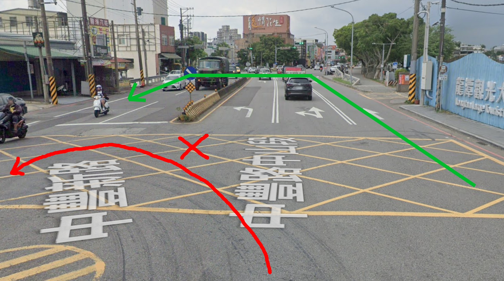
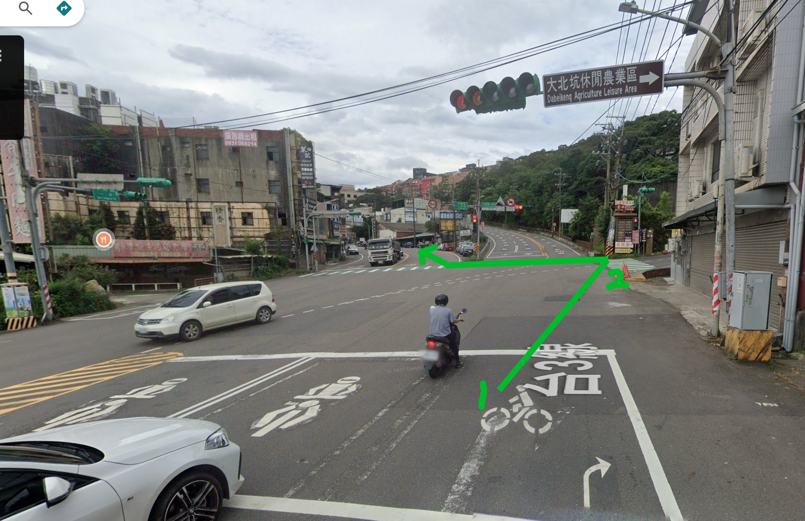
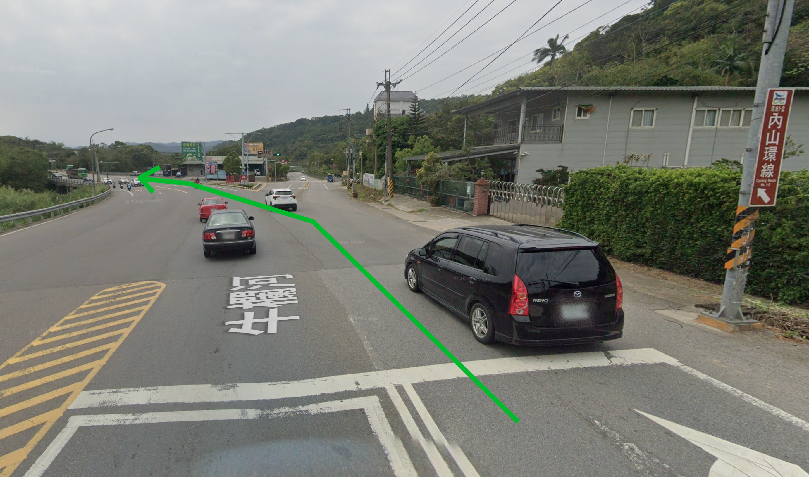
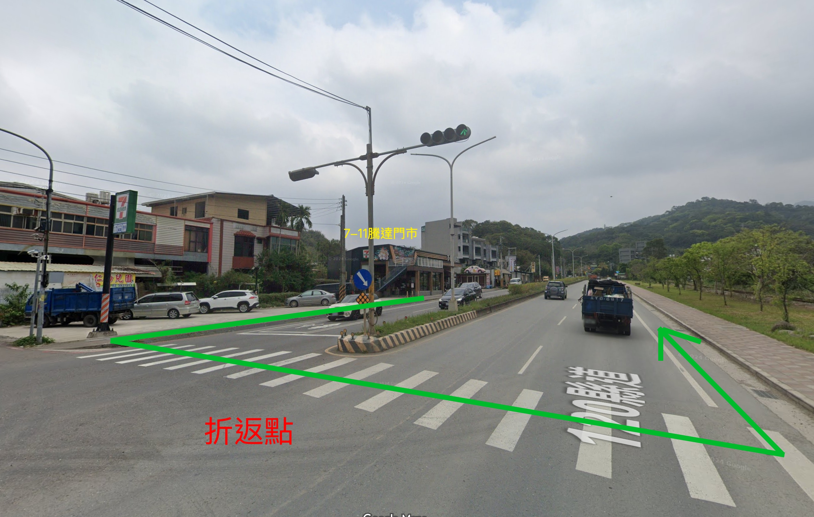
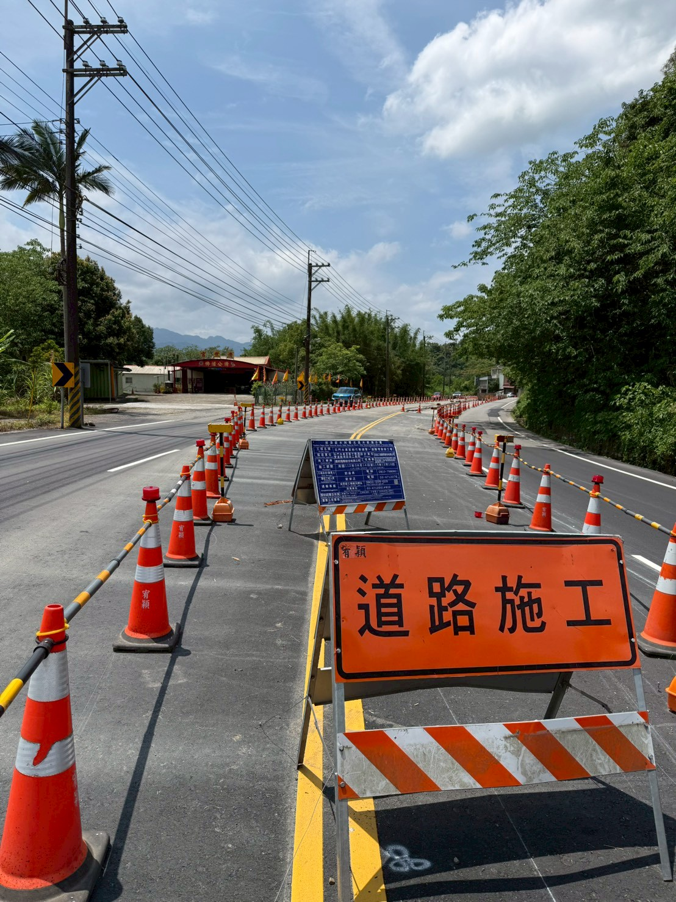

活動名稱： 小鐵人－台3線騎車活動
主辦單位： 小鐵人探險隊
活動日期： 5/24（日）
總里程： 約 41 km
集合地點： 龍潭大池，貴族世家餐廳右側停車場
| 時間 | 項目 | 地點 |
|---|---|---|
| 07:00 | 報到集合 | 龍潭大池．貴族世家餐廳右側停車場 |
| 07:20 | 暖身操、團體拍照 | 集合處（由總教練帶領） |
| 07:30 | 正式出發 | 出發後右轉，前方號誌燈處迴轉接台3線 📷 路口示意圖 |
| 11:30 | 預計返抵終點、午餐 | 龍潭大池停車場後方 |
| 12:00 | 全員集合、慶生 | 同上 |
🅿️ 停車場位置提醒
集合地點是「貴族世家餐廳右側停車場」，不是左側、不是大池正門口。 請循「貴族世家」招牌進入右側停車場。自行開車家庭請預留尋找車位時間，建議 06:45 前抵達。
本次活動路線以 龍潭大池 為起終點，沿台3線及周邊山區道路騎乘，途中經過大北坑、內環山、國道三號路橋下、7-11 騰達門市、濟世宮、中油正新站等地點，最後返回龍潭大池。
全程約 41 km，路線具有山區起伏，並設有多個補給點、折返點與交通管制提醒點。
本次活動分為 5 組 + 機動組 + 補給車，請依分組行進，詳見下方分組名單。
| 組別 | 領騎 | 成員 |
|---|---|---|
| 第 1 組 | 鱸鰻 | 多多、小旗魚、大豆、菓子、蘋果哥哥、仙草 |
| 第 2 組 | 熊鷹 | 綠繡眼、獵鷹、捷豹、允豪、琉璃鳥、山獅 |
| 第 3 組 | 羊跪妃 | 海鸚鵡、比目魚、孔雀魚、水晶魚、松果、夏威夷果、大卷尾 |
| 第 4 組 | 高鐵 | 烏賊、胡麻柴、霸王龍、巫婆、凱蒂貓、瑪麗貓、巫師 |
| 第 5 組 | 荔枝 | 芒果、Julia、Mia、黑豆、紅豆、紅蜥蜴 |
| 機動 | — | 芒果乾 |
| 補給車（1） | — | 羊來了、羊肉爐 |
| 補給車（2） | — | 金錢豹 |
📌 紅色標示者為各組押隊（殿後），由各組鐵爸或鐵媽擔任。
📌 各組請於 07:00 報到時主動找到自己的領騎集合、清點人數。
📌 騎乘途中請保持「領騎 — 成員 — 押隊」隊形，組與組之間保持安全距離。
📌 通過交管／施工段時，請聽從押隊鐵爸／鐵媽指示，確保全組安全通過再前進。
📌 特殊關照： 黑豆（第 5 組）由家長 紅豆（同組）全程關照，請相關家長協助留意。
🛰️ 另提供 GPX 軌跡檔 台3線車訓路線.gpx，可匯入 Strava／Garmin／Komoot 等 App。
起點／終點時間請參考 §二，本表聚焦途中補給點。
| 預計時間 | 里程 | 地點 | 類型 |
|---|---|---|---|
| 08:10～08:20 | 9 km | 國道三號路橋下 | 🥤 補給點1（去程） |
| 09:20～09:30 | 20 km | 7-11 騰達門市 | 🔄 補給＋折返點 |
| 10:00～10:10 | 28.5 km | 濟世宮 | 🥤 補給點2（回程） |
| 10:40～10:50 | 35 km | 中油正新站 | 🥤 補給點3（回程） |
⏱ 每次補給休息時間請控制在 10～15 分鐘，由領隊負責管控。
| 編號 | 地點 | 里程 | 時間 | 類型 | 注意事項 |
|---|---|---|---|---|---|
| 1 | 起點：龍潭大池（貴族世家右側停車場） | 0 km | 07:00 | 🚩 起點 | 報到、暖身、裝備確認、團體拍照；確認水壺、車燈、煞車、胎壓、隨身工具 |
| 2 | 大北坑 | 1 km | ~07:35 | 🚦 交管 | 叉路口待轉、注意來車、車隊保持距離不搶快；剛出發隊伍密集，放慢速度。 ⚠️ 補給車不易臨停，請聽從押隊鐵爸／鐵媽指示 📷 路口示意圖 |
| 3 | 內環山 | 8.3 km | ~08:05 | 🚦 交管 | 叉路口待轉、減速通過、留意前後車距；接近補給點請勿衝刺。 ⚠️ 補給車不易臨停，請聽從押隊鐵爸／鐵媽指示 📷 路口示意圖 |
| 4 | 國道三號路橋下 | 9 km | 08:10–08:20 | 🥤 補給1（去程） | 補水、簡單休息 10～15 分鐘、檢查車況、等待隊伍集合、聽取下段提醒 |
| 5 | 7-11 騰達門市 | 20 km | 09:20–09:30 | 🔄 折返/補給 | 全程折返點、約一半位置；依工作人員指示停靠、不佔用店家出入口、補水上廁所；折返時注意對向來車與隊伍方向📷 折返點示意圖 |
| 6 | 濟世宮 | 28.5 km | 10:00–10:10 | 🥤 補給2（回程） | 補水、體力確認；留意是否有抽筋、過熱或疲勞，聽從工作人員安排再出發 |
| 7 | 中油正新站 | 35 km | 10:40–10:50 | 🥤 補給3（回程） | 距離終點約 6 km，最後補水、整隊；注意加油站車流，依交管指示出發 |
| 8 | 終點：龍潭大池停車場後方 | 41 km | 11:30 / 12:00 | 🏁 終點 | 11:30 午餐、12:00 全員集合慶生（蛋糕由 荔枝 訂購）；依指示停放單車不影響動線 |
由 羊來了、金錢豹 負責，沿途提供水、飲料及冰塊（2 組冰桶分別置於補給車）。途中體力不支或機械故障時，可請補給車接送。
| 項目 | 重點 |
|---|---|
| 🛡️ 安全第一 | 靠右騎乘、不逆向、不闖紅燈、不任意超車、不併排聊天影響交通、下坡不競速；遵守工作人員與交管人員指示 |
| 🚦 叉路口／交管 | 路線含多處叉路與交管待轉：大北坑（1 km）、內環山（8.3 km）、補給點前後、折返點、加油站進出口、回程接近龍潭大池路段。 通過叉路口減速；補給車不易臨停的路段，請聽從押隊鐵爸／鐵媽指示 |
| 🚧 施工路段 | 領隊將提前廣播；全隊減速慢行、單線依序通過；必要時下車牽車；雨天路面濕滑須加倍謹慎。 押隊鐵爸／鐵媽會殿後，確認全組通過後再前進 📷 施工路段現況 |
| ⛰️ 上坡 | 使用適當變速、不硬踩、保持穩定呼吸、與前車保持距離 |
| ⬇️ 下坡 | 雙手握穩煞車、不放手滑行、不超速、不任意超車、入彎前先減速；注意砂石、水溝蓋與路面坑洞 |
| 💧 補水／體力 | 不要等到口渴才喝水：出發前先喝水、途中適量補水、每個補給點檢查水量。 若有頭暈、抽筋、噁心或體力不支，請立即告知工作人員 |
| 👥 團騎規則 | 不任意超越領騎、不落後押隊太遠、保持安全車距、不突然煞車或變換方向；停車先靠邊並提醒後方；發現他人有狀況請通知工作人員；補給點集合後依工作人員指示再出發 |
若參加者途中體力不支或機械故障，請：
請於出發前自行檢核，務必確認雨具已攜帶。
特別提醒：雖然活動設有補給點，但仍請每位參加者自備足夠飲水與基本維修用品。
活動前請先完成基本車況檢查，逐項確認：
請大家安全第一，開心騎乘，順利完成小鐵人台3線挑戰！🚴